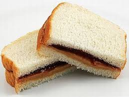

Home
Peanut Butter and Jelly Sandwich

A Peanut Butter and Jelly (PB&J) sandwich is a simple, classic sandwich consisting of peanut butter and jelly or jam spread on slices of bread.
It's a popular and easily made meal, particularly favored by children in the United States and considered a comfort food.
Ingredients
- 2 slices of bread
- 2 tablespoon peanut butter
- 2 tablespoon jelly or jam
Steps
- Take two slices of bread
- Spread peanut butter evenly on one clice
- Spread jelly or jam evenly on the other slice
- Press two slices together, peanut and jelly sides facing each other
- Enjoy!